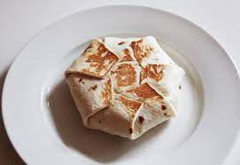

CrispyWrap

Description
Six-sided folded wrap. All the standard taco fixins' stacked in layers. Grilled on both sides.
This Taco Bell classic is quite easy to make and is much tastier when created at home. They have always been a hit with friends and family so I decided to feature the recipe here and share some tips for making them outstanding.
Ingredients
- 12-inch tortillas
- Nacho cheese sauce
- Ground beef
- Taco seasoning
- Tostadas
- Sour Cream
- Shredded Lettuce
- Tomato
Tips
- Seek out 12-inch tortillas! They can be found online or at mexican groceries if you can't get them at your usual grocery store.
- Actually brown your ground beef! In this recipe and in every recipe that requires you to cook ground beef. The flavor is substantially better and if you are using medium-high heat it will not take much longer.
- Serve with additional nacho cheese sauce, sour cream, or guacamole.
Steps
- Prepare the taco meat according to the directions on the taco seasoning packet. The meat will taste much better if you brown it. Ground beef initially turns grey as it is cooked but you should continue to cook it until it starts to get crispy caramellized bits that are noticeably brown. If your beef has less than 20% fat content than you may need to add fat before cooking it.
- While the meat is cooking, chop the tomatoes into roughly 1/4 inch pieces.
- Shred lettuce if necessary.
- Heat nacho cheese sauce in microwave-safe bowl.
- Heat tortillas so they are pliable.
- Layout your crispywrap assembly station with all the fixins' easily at hand. Note: if you are making these for more than 2-3 people the layout of your station and your efficiency at assembling crunchwraps will be crucial to cooking the crispywraps quickly and without incident.
- Begin preheating pans to grill the crispywraps in. For 1-3 crunchwraps I suggest one pan. For 3-5 I'd suggest two pans. For 6+ I'd recommend 3 pans and a preheated oven to keep the finished crunchwraps warm while the other cook.
- Begin assembly of crispwraps. Layer as follows:
- Nacho cheese sauce
- Taco meat
- Tostada
- Sour cream
- Shredded lettuce
- Chopped tomato
- Fold the wrap six times, rotating 60 degrees between each fold.
- Grill crispywraps starting folded side down. Flip when golden.
- Enjoy!